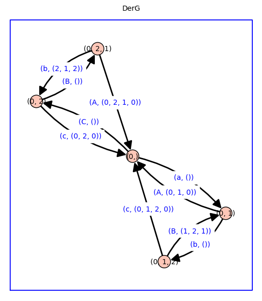

Double Derived Markov chain w/ contexts#
%%capture
%run receptor_tools_cycle_fluxes.ipynb
dG_house = {0: {1: 'a', 2: 'c', 4: 'f'}, 1: {0: 'A', 2: 'b'}, 2: {0: 'C', 1: 'B', 3: 'd'}, 3: {2: 'D', 4: 'e'}, 4: {3: 'E', 0: 'F'}}
dG_c3_handle = {0: {1: 'a', 2: 'c'}, 1: {0: 'A', 2: 'b'}, 2: {0: 'C', 1: 'B', 3: 'd'}, 3: {2: 'D'}}
dG_c4_chord = {0: {1: 'a', 2: 'c', 3: 'e'}, 1: {0: 'A', 2: 'b'}, 2: {0: 'C', 1: 'B', 3: 'd'}, 3: {0: 'E', 2: 'D'}}
dG_c3_tail = {0: {1: 'a', 2: 'C'}, 1: {0: 'A', 2: 'b'}, 2: {0: 'c', 1: 'B', 3: 'd'}, 3: {2: 'd'}}
dG_p2 = {0: {1: 'a'}, 1: {0: 'A'}}
dG_p3 = {0: {1: 'a'}, 1: {0: 'A', 2: 'b'}, 2: {1: 'B'}}
dG_p4 = {0: {1: 'a'}, 1: {0: 'A', 2: 'b'}, 2: {1: 'B', 3: 'c'}, 3: {2: 'C'}}
dG_c3 = {0: {1:'a', 2:'C'}, 1: {0:'A', 2:'b'}, 2: {0:'c', 1:'B'}}
dG = dG_c3 # choose graph here (dG may be used below)
G, Vg = graph_and_edge_ring_from_dict(dG)
nvG, neG, betaG, Tg, TG, cycleG_p, cycleG_m, cycleG_2, cycleG, Jg, dict_vG, inverted_dict_vG, d_cycleG, inverted_d_cycleG = cycle_flux_analysis(G,str='G')
[-C - a a C]
[ A -b - A b]
[ c B -B - c]
For root/cycle [0] : A*B + b*c + A*c
For root/cycle [1] : C*B + a*B + a*c
For root/cycle [2] : C*b + a*b + C*A
G cycles p: [(0, 1, 2, 0)]
G cycles m: [(0, 2, 1, 0)]
G cycles 2: [(0, 1, 0), (0, 2, 0), (1, 2, 1)]
G cycle flux 0 : a * b * c
G cycle flux 1 : C * A * B
G cycle flux 2 : a * A * (B + c)
G cycle flux 3 : C * (b + A) * c
G cycle flux 4 : (C + a) * b * B
dH_c5 = {0: {1: 'v', 2: 'x', 4: 'Z'}, 1: {0: 'V', 2: 'w'}, 2: {1: 'W', 3: 'x'}, 3: {2: 'X', 4: 'y'}, 4: {0: 'z', 3: 'Y'}}
dH_c3 = {0: {1: 'x', 2: 'Z'}, 1: {0: 'X', 2: 'y'}, 2: {0: 'z', 1: 'Y'}}
dH_p4 = {0: {1: 'x'}, 1: {0: 'X', 2: 'y'}, 2: {1: 'Y', 3: 'z'}, 3: {2: 'Z'}}
dH_p3 = {0: {1: 'x'}, 1: {0: 'X', 2: 'y'}, 2: {1: 'Y'}}
dH_p2 = {0: {1: 'x'}, 1: {0: 'X'}}
dH_p2_r2 = {2: {3: 'x'}, 3: {2: 'X'}}
dH_c3_r3 = {3: {4: 'x', 5: 'Z'}, 4: {3: 'X', 5: 'y'}, 5: {3: 'z', 4: 'Y'}}
dH_p3_r3 = {3: {4: 'x'}, 4: {3: 'X', 5: 'y'}, 5: {4: 'Y'}}
dH = copy(dG);
#dH = dH_p2_r2
H, Vh = graph_and_edge_ring_from_dict(dH)
nvH, neH, betaH, Th, TH, cycleH_p, cycleH_m, cycleH_2, cycleH, Jh, dict_vH, inverted_dict_vH, d_cycleH, inverted_d_cycleH = cycle_flux_analysis(H,str='H')
[-C - a a C]
[ A -b - A b]
[ c B -B - c]
For root/cycle [0] : A*B + b*c + A*c
For root/cycle [1] : C*B + a*B + a*c
For root/cycle [2] : C*b + a*b + C*A
H cycles p: [(0, 1, 2, 0)]
H cycles m: [(0, 2, 1, 0)]
H cycles 2: [(0, 1, 0), (0, 2, 0), (1, 2, 1)]
H cycle flux 0 : a * b * c
H cycle flux 1 : C * A * B
H cycle flux 2 : a * A * (B + c)
H cycle flux 3 : C * (b + A) * c
H cycle flux 4 : (C + a) * b * B
for context in [ False, True ]:
GH = Cartesian_product(G, H, context=context)
print(edge_ring_from_graph(GH))
GH.show(edge_labels=True,figsize=12,graph_border=True,\
edge_colors=cartesian_edge_color(GH,verbose=False),\
title='G box H, context = ' + str(context))
GH0 = GH.to_undirected()
GH0.show(edge_labels=False,vertex_labels=False,vertex_size=0,figsize=4,graph_border=True,edge_colors=cartesian_edge_color(GH0,verbose=False),title='G box H')
Multivariate Polynomial Ring in C, B, a, b, A, c over Integer Ring
Multivariate Polynomial Ring in b1, A0, C0, b0, B1, A1, B2, a1, b2, a2, B0, C2, C1, c1, c2, c0, a0, A2 over Integer Ring
DerG = derived_graph(G)
DerG.show(edge_labels=True,figsize=8,graph_border=True,title='DerG')

DerGrate, DerGcyc = split_derived_graph(DerG)
DerGrate.show(edge_labels=True,figsize=8,graph_border=True,title='DerGrate')
DerGcyc.show(edge_labels=True,figsize=8,graph_border=True,title='DerGcyc')
dict_Jg = cycle_fluxes_from_derived_graph(DerG,verbose=True)
rooted spanning tree of derived graph T(0,0) = (A*B + b*c + A*c) * (A*B + C*B + a*B + b*c + A*c + a*c + C*b + a*b + C*A)
J (0, 1, 0) = a * A * (B + c) * (A*B + b*c + A*c)
J (0, 1, 2, 0) = a * b * c * (A*B + b*c + A*c)
J (1, 2, 1) = a * b * B * (A*B + b*c + A*c)
J (0, 2, 0) = C * (b + A) * c * (A*B + b*c + A*c)
J (0, 2, 1, 0) = C * A * B * (A*B + b*c + A*c)
J (2, 1, 2) = C * b * B * (A*B + b*c + A*c)
DerH = derived_graph(H)
DerH.show(edge_labels=True,figsize=8,graph_border=True,title='DerH')
DerHrate, DerHcyc = split_derived_graph(DerH)
dict_Jh = cycle_fluxes_from_derived_graph(DerH,verbose=True)
rooted spanning tree of derived graph T(0,0) = (A*B + b*c + A*c) * (A*B + C*B + a*B + b*c + A*c + a*c + C*b + a*b + C*A)
J (0, 1, 0) = a * A * (B + c) * (A*B + b*c + A*c)
J (0, 1, 2, 0) = a * b * c * (A*B + b*c + A*c)
J (1, 2, 1) = a * b * B * (A*B + b*c + A*c)
J (0, 2, 0) = C * (b + A) * c * (A*B + b*c + A*c)
J (0, 2, 1, 0) = C * A * B * (A*B + b*c + A*c)
J (2, 1, 2) = C * b * B * (A*B + b*c + A*c)
for context in [ False, True]:
for reduce in [ False, True]:
print('***')
print('*** context =', str(context), ' reduce =', str(reduce))
print('***')
DDerGH = double_derived_graph(DerG,DerH,context=context,reduce=reduce)
print(edge_ring_from_derived_graph(DDerGH))
DDerGH.show(edge_labels=True,figsize=12,graph_border=True,\
title='DDerGH '+'nv ='+str(DDerGH.order())+' ne = '+str(DDerGH.size()))
DDerGH0 = DDerGH.to_undirected()
if reduce==False:
edge_colors=cartesian_edge_color(DDerGH0,verbose=False)
else:
edge_colors=None
DDerGH0.show(edge_colors=edge_colors,vertex_size=0,\
vertex_labels=False,graph_border=True,title='DDer G box H')
***
*** context = False reduce = False
***
Multivariate Polynomial Ring in C, B, a, b, A, c over Integer Ring
***
*** context = False reduce = True
***
Multivariate Polynomial Ring in C, B, a, b, A, c over Integer Ring
***
*** context = True reduce = False
***
Multivariate Polynomial Ring in b1, A0, C0, b0, B1, A1, B2, a1, b2, a2, B0, C2, C1, c1, c2, c0, a0, A2 over Integer Ring
***
*** context = True reduce = True
***
Multivariate Polynomial Ring in b1, A0, C0, b0, B1, A1, B2, a1, b2, a2, B0, C2, C1, c1, c2, c0, a0, A2 over Integer Ring
DDerGH = double_derived_graph(DerG,DerH,context=False,reduce=True)
dict_Jg_lumped_merge = cycle_fluxes_from_derived_graph(DDerGH,verbose=False,big=False)
for key in dict_Jg_lumped_merge:
print(key,':',dict_Jg_lumped_merge[key],'\n')
(0, 1, 0) : 2^5 * A * a * (B + c) * (B + b + A + c) * (C + B + a + b + A + c) * (B*A + b*c + A*c)^2 * (C*B + B*a + C*b + a*b + C*A + B*A + a*c + b*c + A*c) * (2*C^2*B^2 + 2*C*B^3 + 4*C*B^2*a + 2*B^3*a + 2*B^2*a^2 + 4*C^2*B*b + 6*C*B^2*b + 8*C*B*a*b + 6*B^2*a*b + 4*B*a^2*b + 2*C^2*b^2 + 6*C*B*b^2 + 4*C*a*b^2 + 6*B*a*b^2 + 2*a^2*b^2 + 2*C*b^3 + 2*a*b^3 + 5*C^2*B*A + 10*C*B^2*A + 4*B^3*A + 7*C*B*a*A + 8*B^2*a*A + 2*B*a^2*A + 4*C^2*b*A + 16*C*B*b*A + 8*B^2*b*A + 5*C*a*b*A + 12*B*a*b*A + a^2*b*A + 6*C*b^2*A + 4*B*b^2*A + 4*a*b^2*A + 2*C^2*A^2 + 10*C*B*A^2 + 8*B^2*A^2 + C*a*A^2 + 6*B*a*A^2 + 6*C*b*A^2 + 8*B*b*A^2 + 2*a*b*A^2 + 2*C*A^3 + 4*B*A^3 + C^2*B*c + 4*C*B^2*c + 5*C*B*a*c + 6*B^2*a*c + 4*B*a^2*c + 2*C^2*b*c + 12*C*B*b*c + 4*B^2*b*c + 7*C*a*b*c + 16*B*a*b*c + 5*a^2*b*c + 8*C*b^2*c + 8*B*b^2*c + 10*a*b^2*c + 4*b^3*c + 2*C^2*A*c + 16*C*B*A*c + 12*B^2*A*c + 6*C*a*A*c + 16*B*a*A*c + 2*a^2*A*c + 16*C*b*A*c + 24*B*b*A*c + 16*a*b*A*c + 12*b^2*A*c + 8*C*A^2*c + 16*B*A^2*c + 6*a*A^2*c + 12*b*A^2*c + 4*A^3*c + 2*C*B*c^2 + C*a*c^2 + 6*B*a*c^2 + 2*a^2*c^2 + 6*C*b*c^2 + 8*B*b*c^2 + 10*a*b*c^2 + 8*b^2*c^2 + 6*C*A*c^2 + 12*B*A*c^2 + 8*a*A*c^2 + 16*b*A*c^2 + 8*A^2*c^2 + 2*a*c^3 + 4*b*c^3 + 4*A*c^3)
(0, 1, 2, 0) : 2^5 * c * b * a * (B + b + A + c) * (C + B + a + b + A + c) * (B*A + b*c + A*c)^2 * (C*B + B*a + C*b + a*b + C*A + B*A + a*c + b*c + A*c) * (2*C^2*B^2 + 2*C*B^3 + 4*C*B^2*a + 2*B^3*a + 2*B^2*a^2 + 4*C^2*B*b + 6*C*B^2*b + 8*C*B*a*b + 6*B^2*a*b + 4*B*a^2*b + 2*C^2*b^2 + 6*C*B*b^2 + 4*C*a*b^2 + 6*B*a*b^2 + 2*a^2*b^2 + 2*C*b^3 + 2*a*b^3 + 5*C^2*B*A + 10*C*B^2*A + 4*B^3*A + 7*C*B*a*A + 8*B^2*a*A + 2*B*a^2*A + 4*C^2*b*A + 16*C*B*b*A + 8*B^2*b*A + 5*C*a*b*A + 12*B*a*b*A + a^2*b*A + 6*C*b^2*A + 4*B*b^2*A + 4*a*b^2*A + 2*C^2*A^2 + 10*C*B*A^2 + 8*B^2*A^2 + C*a*A^2 + 6*B*a*A^2 + 6*C*b*A^2 + 8*B*b*A^2 + 2*a*b*A^2 + 2*C*A^3 + 4*B*A^3 + C^2*B*c + 4*C*B^2*c + 5*C*B*a*c + 6*B^2*a*c + 4*B*a^2*c + 2*C^2*b*c + 12*C*B*b*c + 4*B^2*b*c + 7*C*a*b*c + 16*B*a*b*c + 5*a^2*b*c + 8*C*b^2*c + 8*B*b^2*c + 10*a*b^2*c + 4*b^3*c + 2*C^2*A*c + 16*C*B*A*c + 12*B^2*A*c + 6*C*a*A*c + 16*B*a*A*c + 2*a^2*A*c + 16*C*b*A*c + 24*B*b*A*c + 16*a*b*A*c + 12*b^2*A*c + 8*C*A^2*c + 16*B*A^2*c + 6*a*A^2*c + 12*b*A^2*c + 4*A^3*c + 2*C*B*c^2 + C*a*c^2 + 6*B*a*c^2 + 2*a^2*c^2 + 6*C*b*c^2 + 8*B*b*c^2 + 10*a*b*c^2 + 8*b^2*c^2 + 6*C*A*c^2 + 12*B*A*c^2 + 8*a*A*c^2 + 16*b*A*c^2 + 8*A^2*c^2 + 2*a*c^3 + 4*b*c^3 + 4*A*c^3)
(1, 2, 1) : 2^5 * b * B * (B + b + A + c) * (C + a) * (C + B + a + b + A + c) * (B*A + b*c + A*c)^2 * (C*B + B*a + C*b + a*b + C*A + B*A + a*c + b*c + A*c) * (2*C^2*B^2 + 2*C*B^3 + 4*C*B^2*a + 2*B^3*a + 2*B^2*a^2 + 4*C^2*B*b + 6*C*B^2*b + 8*C*B*a*b + 6*B^2*a*b + 4*B*a^2*b + 2*C^2*b^2 + 6*C*B*b^2 + 4*C*a*b^2 + 6*B*a*b^2 + 2*a^2*b^2 + 2*C*b^3 + 2*a*b^3 + 5*C^2*B*A + 10*C*B^2*A + 4*B^3*A + 7*C*B*a*A + 8*B^2*a*A + 2*B*a^2*A + 4*C^2*b*A + 16*C*B*b*A + 8*B^2*b*A + 5*C*a*b*A + 12*B*a*b*A + a^2*b*A + 6*C*b^2*A + 4*B*b^2*A + 4*a*b^2*A + 2*C^2*A^2 + 10*C*B*A^2 + 8*B^2*A^2 + C*a*A^2 + 6*B*a*A^2 + 6*C*b*A^2 + 8*B*b*A^2 + 2*a*b*A^2 + 2*C*A^3 + 4*B*A^3 + C^2*B*c + 4*C*B^2*c + 5*C*B*a*c + 6*B^2*a*c + 4*B*a^2*c + 2*C^2*b*c + 12*C*B*b*c + 4*B^2*b*c + 7*C*a*b*c + 16*B*a*b*c + 5*a^2*b*c + 8*C*b^2*c + 8*B*b^2*c + 10*a*b^2*c + 4*b^3*c + 2*C^2*A*c + 16*C*B*A*c + 12*B^2*A*c + 6*C*a*A*c + 16*B*a*A*c + 2*a^2*A*c + 16*C*b*A*c + 24*B*b*A*c + 16*a*b*A*c + 12*b^2*A*c + 8*C*A^2*c + 16*B*A^2*c + 6*a*A^2*c + 12*b*A^2*c + 4*A^3*c + 2*C*B*c^2 + C*a*c^2 + 6*B*a*c^2 + 2*a^2*c^2 + 6*C*b*c^2 + 8*B*b*c^2 + 10*a*b*c^2 + 8*b^2*c^2 + 6*C*A*c^2 + 12*B*A*c^2 + 8*a*A*c^2 + 16*b*A*c^2 + 8*A^2*c^2 + 2*a*c^3 + 4*b*c^3 + 4*A*c^3)
(0, 2, 0) : 2^5 * c * (b + A) * (B + b + A + c) * C * (C + B + a + b + A + c) * (B*A + b*c + A*c)^2 * (C*B + B*a + C*b + a*b + C*A + B*A + a*c + b*c + A*c) * (2*C^2*B^2 + 2*C*B^3 + 4*C*B^2*a + 2*B^3*a + 2*B^2*a^2 + 4*C^2*B*b + 6*C*B^2*b + 8*C*B*a*b + 6*B^2*a*b + 4*B*a^2*b + 2*C^2*b^2 + 6*C*B*b^2 + 4*C*a*b^2 + 6*B*a*b^2 + 2*a^2*b^2 + 2*C*b^3 + 2*a*b^3 + 5*C^2*B*A + 10*C*B^2*A + 4*B^3*A + 7*C*B*a*A + 8*B^2*a*A + 2*B*a^2*A + 4*C^2*b*A + 16*C*B*b*A + 8*B^2*b*A + 5*C*a*b*A + 12*B*a*b*A + a^2*b*A + 6*C*b^2*A + 4*B*b^2*A + 4*a*b^2*A + 2*C^2*A^2 + 10*C*B*A^2 + 8*B^2*A^2 + C*a*A^2 + 6*B*a*A^2 + 6*C*b*A^2 + 8*B*b*A^2 + 2*a*b*A^2 + 2*C*A^3 + 4*B*A^3 + C^2*B*c + 4*C*B^2*c + 5*C*B*a*c + 6*B^2*a*c + 4*B*a^2*c + 2*C^2*b*c + 12*C*B*b*c + 4*B^2*b*c + 7*C*a*b*c + 16*B*a*b*c + 5*a^2*b*c + 8*C*b^2*c + 8*B*b^2*c + 10*a*b^2*c + 4*b^3*c + 2*C^2*A*c + 16*C*B*A*c + 12*B^2*A*c + 6*C*a*A*c + 16*B*a*A*c + 2*a^2*A*c + 16*C*b*A*c + 24*B*b*A*c + 16*a*b*A*c + 12*b^2*A*c + 8*C*A^2*c + 16*B*A^2*c + 6*a*A^2*c + 12*b*A^2*c + 4*A^3*c + 2*C*B*c^2 + C*a*c^2 + 6*B*a*c^2 + 2*a^2*c^2 + 6*C*b*c^2 + 8*B*b*c^2 + 10*a*b*c^2 + 8*b^2*c^2 + 6*C*A*c^2 + 12*B*A*c^2 + 8*a*A*c^2 + 16*b*A*c^2 + 8*A^2*c^2 + 2*a*c^3 + 4*b*c^3 + 4*A*c^3)
(0, 2, 1, 0) : 2^5 * A * B * (B + b + A + c) * C * (C + B + a + b + A + c) * (B*A + b*c + A*c)^2 * (C*B + B*a + C*b + a*b + C*A + B*A + a*c + b*c + A*c) * (2*C^2*B^2 + 2*C*B^3 + 4*C*B^2*a + 2*B^3*a + 2*B^2*a^2 + 4*C^2*B*b + 6*C*B^2*b + 8*C*B*a*b + 6*B^2*a*b + 4*B*a^2*b + 2*C^2*b^2 + 6*C*B*b^2 + 4*C*a*b^2 + 6*B*a*b^2 + 2*a^2*b^2 + 2*C*b^3 + 2*a*b^3 + 5*C^2*B*A + 10*C*B^2*A + 4*B^3*A + 7*C*B*a*A + 8*B^2*a*A + 2*B*a^2*A + 4*C^2*b*A + 16*C*B*b*A + 8*B^2*b*A + 5*C*a*b*A + 12*B*a*b*A + a^2*b*A + 6*C*b^2*A + 4*B*b^2*A + 4*a*b^2*A + 2*C^2*A^2 + 10*C*B*A^2 + 8*B^2*A^2 + C*a*A^2 + 6*B*a*A^2 + 6*C*b*A^2 + 8*B*b*A^2 + 2*a*b*A^2 + 2*C*A^3 + 4*B*A^3 + C^2*B*c + 4*C*B^2*c + 5*C*B*a*c + 6*B^2*a*c + 4*B*a^2*c + 2*C^2*b*c + 12*C*B*b*c + 4*B^2*b*c + 7*C*a*b*c + 16*B*a*b*c + 5*a^2*b*c + 8*C*b^2*c + 8*B*b^2*c + 10*a*b^2*c + 4*b^3*c + 2*C^2*A*c + 16*C*B*A*c + 12*B^2*A*c + 6*C*a*A*c + 16*B*a*A*c + 2*a^2*A*c + 16*C*b*A*c + 24*B*b*A*c + 16*a*b*A*c + 12*b^2*A*c + 8*C*A^2*c + 16*B*A^2*c + 6*a*A^2*c + 12*b*A^2*c + 4*A^3*c + 2*C*B*c^2 + C*a*c^2 + 6*B*a*c^2 + 2*a^2*c^2 + 6*C*b*c^2 + 8*B*b*c^2 + 10*a*b*c^2 + 8*b^2*c^2 + 6*C*A*c^2 + 12*B*A*c^2 + 8*a*A*c^2 + 16*b*A*c^2 + 8*A^2*c^2 + 2*a*c^3 + 4*b*c^3 + 4*A*c^3)
DDerGH = double_derived_graph(DerG,DerH,context=True,reduce=True)
dict_Jg_lumped_merge = cycle_fluxes_from_derived_graph(DDerGH,verbose=False,big=False)
for key in dict_Jg_lumped_merge:
print(key,':',dict_Jg_lumped_merge[key],'\n')